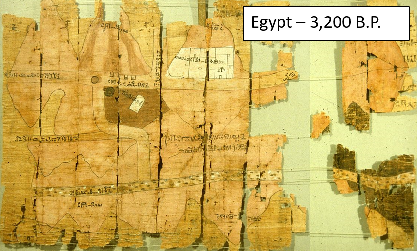
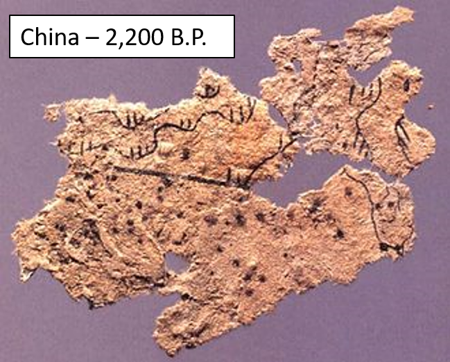

Pre-Historic Maps
Many are hard to recognize as maps
-Rock art, pottery, carving, and etchings
-Movement, gestures, & oral traditions
-Paper and Textile maps appeared later

Few Surviving Examples
Must rely on more modern analogues.


Pre-Historic Maps
Frequently depicted:
-Landscapes
-Hunting Grounds
-Villages
-Agricultural Plots

Oldest Known Maps
Mammoth Tusk
Oldest known graphic depiction of space. Hunting landscape around the Dyje River Czechia 26,000 B.P.

Oldest Known Maps
Yurda
Stone engraving of Darling River basin with overland shortcuts. Australia 20,000 B.P.

Oldest Known Maps
Map Rock
Stone engraving of Snake River Valley Idaho 12,000 B.P.

First "Urban" Plans

Çatalhöyük a village Turkey, 8700 B.P.
{kind=link}
First "Urban" Plans

Bedolina Petroglyph, Italy, 4000 B.P.
Paper and Textile Maps
Maps on papyrus paper appeared in Egypt ~3,200 BP.
Paper and Textile Maps
Paper and silk maps appeared in China ~2,200 BP.
Cartography and Navigation
Austronesian expansion from Taiwan started ~5,000 BP

Navigational Charts
Polynesian navigators spread across the pacific
-Reading stars, waves, weather, and wildlife
-Used charts, songs, and stories to record important details